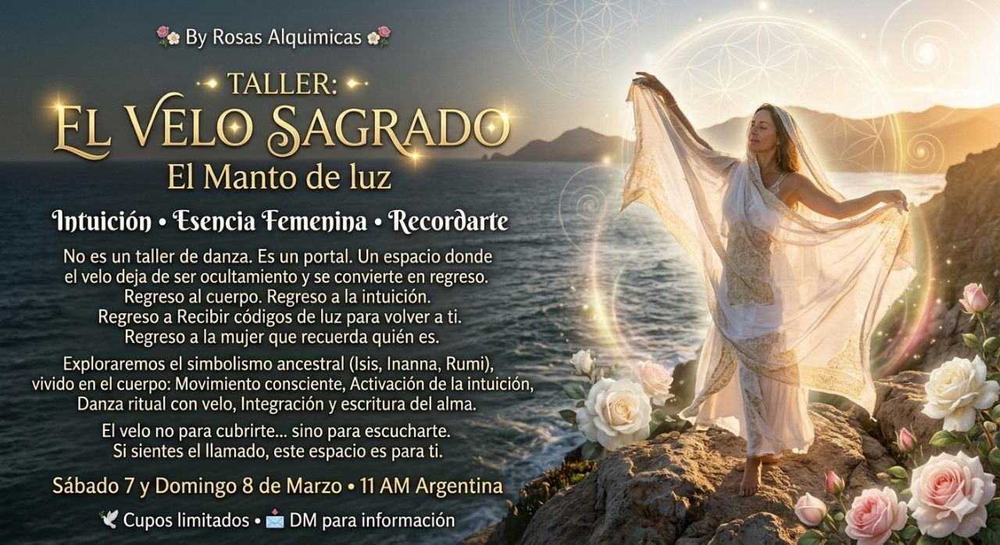

Intuición • Esencia Femenina • Recordarte
No es un taller de danza.
Es un portal.
Un espacio donde el velo deja de ser ocultamiento y se convierte en regreso.
Regreso al cuerpo.
Regreso a la intuición. Regreso a recibir códigos de luz para volver a ti.
Regreso a la mujer que recuerda quién es.
Exploraremos el simbolismo ancestral del velo presente en tradiciones antiguas, en los misterios de Isis y Inanna, en la mística del corazón como enseñaba Rumi.
Pero, sobre todo, lo viviremos en el cuerpo.
El velo no para cubrirte.
Sino para escucharte.
No para esconderte.
Sino para recordarte.
Si sientes el llamado, este espacio es para ti.
Sábado 7 y domingo 8 de marzo · 11:00 AM Argentina
🕊 Cupos limitados 📩 Envíame mensaje directo para información
Contactar para información e inscripción